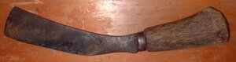

gepes 
/gɔpɔs/
n.
“slender_knife”
n.
a small slender knife used by women
Mahalang ka gepes ne impangugpit ku te balahen ne eggimuwen ku ne sen-ung.
Wrd.Gloss: slender_knife
O. Syn. ilab
Eng. slender knife; knife variety
Online dict status: -
Usage level: M
v.
for someone (agent, agent, eg><ø-paN-) to cut off all the ends having finished making a woven basket liyang or a woven mat ikam, a winnowing tray nihu or rice basket daluus.
Eng. cut off
Online dict status: -
Usage level: M
Updated by: RJH,AAA,QDL,RJH
Last updated: 19/Dec/2011
This page last updated: 19/May/2012
Copyright © 2009-2010, Matigsalug Language Christian Association, Inc